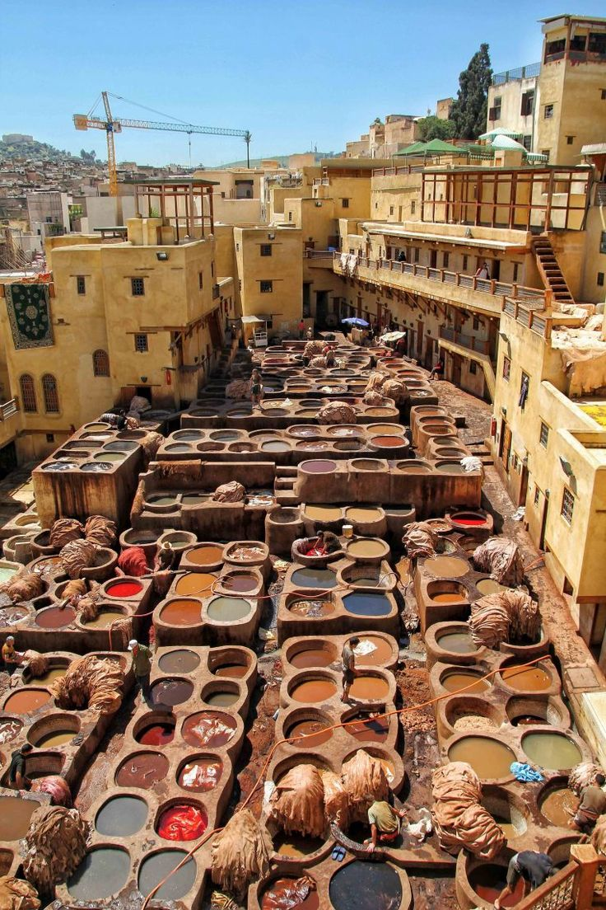

Marrakech
Connue pour ses souks colorés, sa médina historique et la célèbre place Jemaa el-Fna.

Casablanca
Centre économique du Maroc avec la mosquée Hassan II et une architecture moderne.

Fès
Réputée pour sa médina, ses artisans et l’université Al Quaraouiyine, la plus ancienne du monde.

Rabat
Capitale du Maroc, célèbre pour la Kasbah des Oudayas, la Tour Hassan et son patrimoine historique.

Chefchaouen
Connue pour ses maisons bleues et son ambiance relaxante dans les montagnes du Rif.